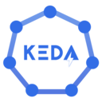
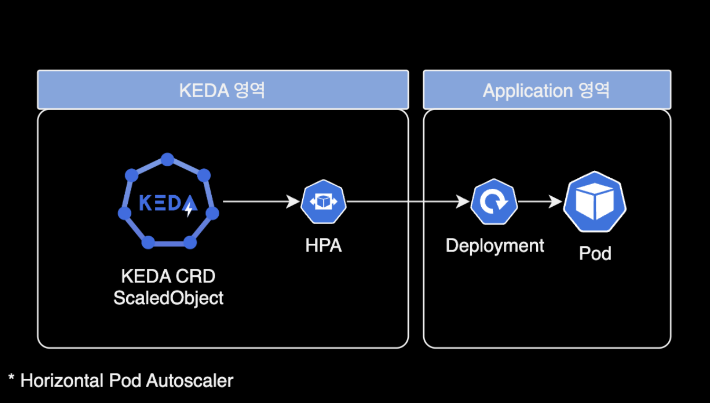
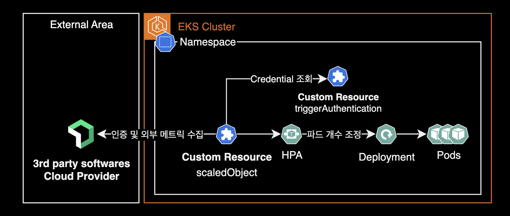
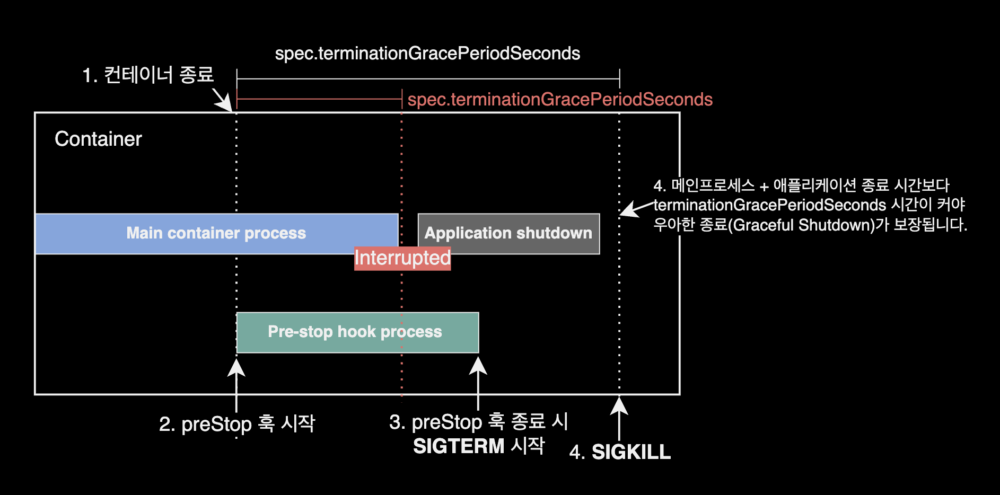
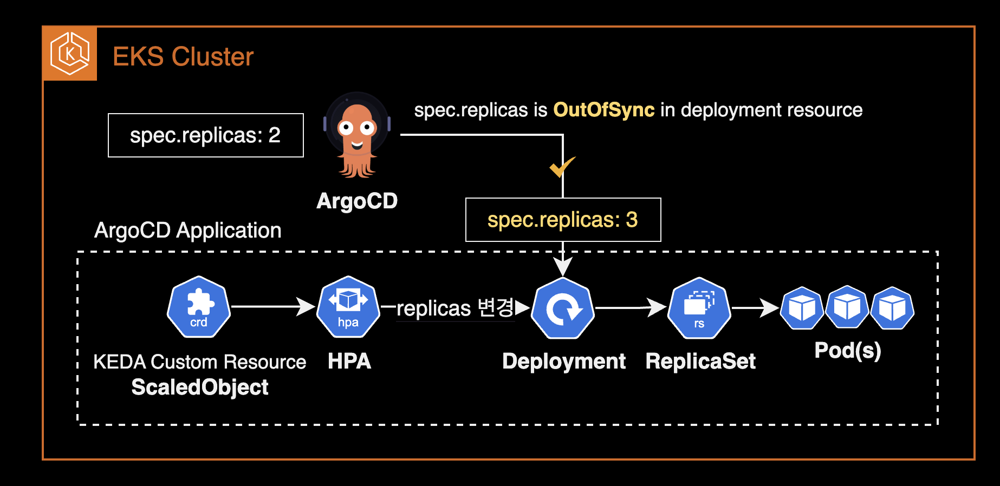
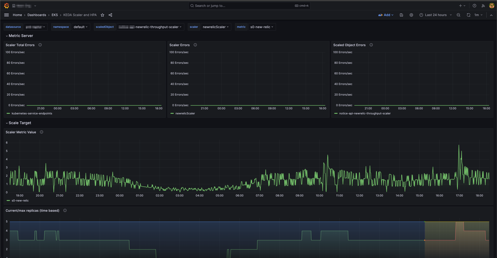
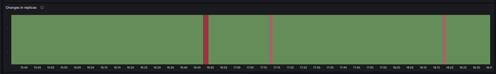
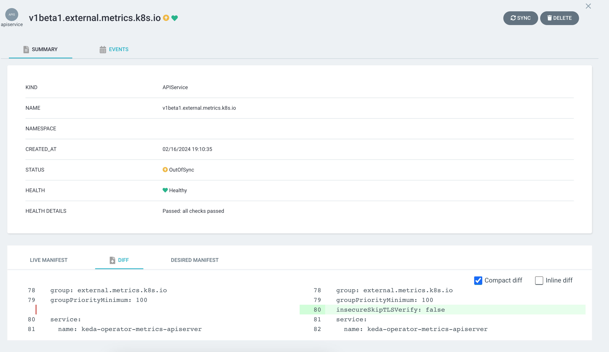

keda
개요
KEDA 설치 및 운영 가이드입니다.
쿠버네티스 클러스터를 운영하는 DevOps Engineer를 대상으로 작성된 문서입니다.
배경지식
KEDA

KEDA는 Kubernetes Event-driven Autoscaling의 줄임말로, Kubernetes에서 애플리케이션의 이벤트 기반 자동 스케일링을 가능하게 하는 확장 프레임워크입니다.
이는 클라우드 네이티브 애플리케이션이 리소스 사용량에 따라 탄력적으로 스케일 업과 스케일 다운을 할 수 있도록 지원합니다. KEDA는 다양한 이벤트 소스(예: 메시지 큐, 데이터베이스, 파일 시스템 등)로부터 발생하는 이벤트를 감지하고, 이에 기반하여 파드(Pod)의 수를 자동으로 조절합니다. 이를 통해 애플리케이션은 실시간 트래픽 변화에 더 민감하게 반응하면서도, 불필요한 리소스 사용을 최소화할 수 있습니다.

Kubernetes는 컨테이너화된 애플리케이션의 배포, 스케일링 및 관리를 자동화하는 오픈 소스 시스템입니다. 기본적으로 Kubernetes는 CPU와 메모리 사용량 같은 메트릭스를 기반으로 한 자동 스케일링을 지원합니다. 그러나, 이러한 메트릭스만으로는 이벤트 기반의 애플리케이션 스케일링 요구사항을 충분히 해결하기 어려울 수 있습니다. KEDA는 이 문제를 해결하기 위해 등장했습니다. KEDA를 사용하면, 애플리케이션이 이벤트의 발생 빈도나 양에 따라 동적으로 스케일링할 수 있게 됩니다. 이는 특히 이벤트 기반 아키텍처를 사용하는 마이크로서비스 애플리케이션에 유용합니다.
환경
- EKS v1.26 (amd64)
- KEDA v2.12.1 (App Version)
KEDA 설치
KEDA Operator를 helm 차트 방식으로 설치하는 일련의 과정을 소개합니다.
버전 호환성 표
클러스터 버전에 호환되는 KEDA 버전을 맞춰야 합니다. KEDA 공식문서의 Kubernetes Comptability 페이지를 참고해서 KEDA 버전별로 지원되는 k8s 버전을 확인하고, 설치할 클러스터와 버전 문제가 없는지를 미리 확인합니다.
| KEDA | Kubernetes |
|---|---|
v2.14 |
v1.27 - v1.29 |
v2.13 |
v1.27 - v1.29 |
v2.12 |
v1.26 - v1.28 |
v2.11 |
v1.25 - v1.27 |
v2.10 |
v1.24 - v1.26 |
v2.9 |
v1.23 - v1.25 |
v2.8 |
v1.17 - v1.25 |
v2.7 |
v1.17 - v1.25 |
차트 다운로드
이 가이드에서는 helm repo add 명령어 방식이 아닌 로컬에 KEDA 헬름 차트를 다운로드 받은 후, values.yaml 설정을 수정한 후 설치하는 과정으로 진행합니다.
Github Cloud에 올라와 있는 keda 공식 헬름차트를 로컬에 다운로드 받습니다.
git clone https://github.com/kedacore/charts.git
cd charts/keda/
차트 values 설정
values.yaml을 수정합니다.
파드 고가용성 구성
고가용성High Availability을 위해 operator.replicaCount를 기본값 1에서 2로 수정합니다. KEDA Operator 파드가 2개로 배포됩니다.
# values.yaml
...
operator:
# -- Name of the KEDA operator
name: keda-operator
# -- ReplicaSets for this Deployment you want to retain (Default: 10)
- revisionHistoryLimit: 10
+ revisionHistoryLimit: 2
# -- Capability to configure the number of replicas for KEDA operator.
# While you can run more replicas of our operator, only one operator instance will be the leader and serving traffic.
# You can run multiple replicas, but they will not improve the performance of KEDA, it could only reduce downtime during a failover.
# Learn more in [our documentation](https://keda.sh/docs/latest/operate/cluster/#high-availability).
- replicaCount: 1
+ replicaCount: 2
...
Prometheus를 위한 메트릭 수집용 포트 구성
metricServer 파드와 keda operator 파드 모두 prometheus에서 메트릭 수집해갈 수 있도록 enabled: true로 설정합니다.
# values.yaml
...
prometheus:
metricServer:
# -- Enable metric server Prometheus metrics expose
- enabled: false
+ enabled: true
...
operator:
- enabled: false
+ enabled: true
추후에 Grafana 대시보드로 KEDA 모니터링 환경을 제공하려면 위 설정을 활성화해야 합니다.
prometheus.metricServer.enabled와 prometheus.operaotr.enabled 설정을 활성화(true)한 상태로 KEDA를 배포하게 되면 아래와 같이 서비스 리소스의 8080/TCP 포트로 메트릭 수집용 포트가 추가로 뜨게 됩니다.
kubectl get service -n keda -o wide
NAME TYPE CLUSTER-IP EXTERNAL-IP PORT(S) AGE SELECTOR
keda-admission-webhooks ClusterIP 172.20.xx.xx <none> 443/TCP 129d app=keda-admission-webhooks
keda-operator ClusterIP 172.20.xxx.xx <none> 9666/TCP,8080/TCP 129d app=keda-operator
keda-operator-metrics-apiserver ClusterIP 172.20.xx.xxx <none> 443/TCP,8080/TCP 129d app=keda-operator-metrics-apiserver
헬름 차트 설치
KEDA 헬름 차트를 클러스터에 설치합니다.
helm upgrade \
--install \
--create-namespace \
--namespace keda \
keda . \
--values values.yaml \
--wait
KEDA 차트에 포함된 리소스 배포 상태를 확인합니다.
kubectl get all -n keda
NAME READY STATUS RESTARTS AGE
pod/keda-admission-webhooks-55ddc5c576-6frpg 1/1 Running 0 31d
pod/keda-operator-6997d9df7b-9xkjv 1/1 Running 0 8d
pod/keda-operator-6997d9df7b-sfjmz 1/1 Running 0 3d8h
pod/keda-operator-metrics-apiserver-bd4dd4d6d-kmsmt 1/1 Running 0 7d11h
NAME TYPE CLUSTER-IP EXTERNAL-IP PORT(S) AGE
service/keda-admission-webhooks ClusterIP 172.20.66.26 <none> 443/TCP 129d
service/keda-operator ClusterIP 172.20.179.75 <none> 9666/TCP,8080/TCP 129d
service/keda-operator-metrics-apiserver ClusterIP 172.20.47.148 <none> 443/TCP,8080/TCP 129d
NAME READY UP-TO-DATE AVAILABLE AGE
deployment.apps/keda-admission-webhooks 1/1 1 1 129d
deployment.apps/keda-operator 2/2 2 2 129d
deployment.apps/keda-operator-metrics-apiserver 1/1 1 1 129d
NAME DESIRED CURRENT READY AGE
replicaset.apps/keda-admission-webhooks-55ddc5c576 1 1 1 31d
replicaset.apps/keda-admission-webhooks-59978445df 0 0 0 129d
replicaset.apps/keda-operator-56d494855d 0 0 0 31d
replicaset.apps/keda-operator-6857fbc758 0 0 0 129d
replicaset.apps/keda-operator-6997d9df7b 2 2 2 9d
replicaset.apps/keda-operator-metrics-apiserver-6b4fff47cb 0 0 0 31d
replicaset.apps/keda-operator-metrics-apiserver-765945cb4f 0 0 0 129d
replicaset.apps/keda-operator-metrics-apiserver-bd4dd4d6d 1 1 1 9d
KEDA 커스텀 리소스 확인
KEDA에서 사용하는 커스텀 리소스를 확인합니다.
kubectl api-resources --api-group keda.sh
NAME SHORTNAMES APIVERSION NAMESPACED KIND
clustertriggerauthentications cta,clustertriggerauth keda.sh/v1alpha1 false ClusterTriggerAuthentication
scaledjobs sj keda.sh/v1alpha1 true ScaledJob
scaledobjects so keda.sh/v1alpha1 true ScaledObject
triggerauthentications ta,triggerauth keda.sh/v1alpha1 true TriggerAuthentication
KEDA(Kubernetes Event-Driven Autoscaling)는 Kubernetes에서 이벤트 기반의 자동 스케일링을 가능하게 하는 프로젝트로, 다양한 이벤트 소스에 반응하여 워크로드의 스케일을 동적으로 조정합니다. KEDA는 커스텀 리소스 정의Custom Resource Definitions, CRDs를 사용하여 Kubernetes 클러스터 내에서 이러한 기능을 구현합니다. 여기서 언급한 두 가지 주요 커스텀 리소스는 다음과 같습니다.
ScaledObject
ScaledObject는 KEDA가 이벤트 소스로부터 워크로드(주로 Kubernetes Deployments, Jobs)의 스케일을 어떻게 조정할지 정의하는 커스텀 리소스입니다. 이를 통해 워크로드가 이벤트의 발생 빈도에 따라 자동으로 스케일 업/다운 할 수 있습니다.
ScaledObject를 사용하여, 예를 들어, Kafka 토픽에 메시지가 쌓일 때마다 관련된 처리를 담당하는 Deployment의 파드 인스턴스 수를 늘릴 수 있습니다. 메시지 큐가 비워지면, 스케일이 다운되어 자원을 절약할 수 있습니다.
ScaledObject에는 이벤트 소스, 대상 리소스(스케일 대상), 스케일링 정책(최소/최대 스케일, 트리거 세부 정보 등) 등을 지정할 수 있는 필드가 포함되어 있습니다.
TriggerAuthentication
TriggerAuthentication은 KEDA가 이벤트 소스에 안전하게 연결하기 위해 필요한 인증 정보를 정의하는 커스텀 리소스입니다. 이는 특정 스케일링 작업에 필요한 인증 메커니즘(예: API 키, 토큰, 시크릿 등)을 안전하게 저장하고 관리하는 방법을 제공합니다.
예를 들어, Azure Service Bus나 AWS SQS와 같은 클라우드 서비스를 이벤트 소스로 사용하는 경우, 이 서비스들에 접근하기 위해 필요한 인증 정보를 TriggerAuthentication 리소스에 저장할 수 있습니다. 이렇게 하면, 해당 인증 정보를 사용하여 KEDA가 해당 이벤트 소스를 모니터링하고 워크로드의 스케일을 조정할 수 있습니다.

TriggerAuthentication 리소스는 Kubernetes Secret, Hashicorp Vault, AWS Secrets Manager를 포함해 다양한 인증 방법을 지원하며, 이에 필요한 인증 정보(시크릿 참조, 토큰, API 키 등)를 안전하게 저장합니다.
이 두 커스텀 리소스를 통해 KEDA는 Kubernetes에서의 이벤트 기반 스케일링을 매우 유연하고 효과적으로 구현할 수 있습니다.
어플리케이션 차트에 KEDA 추가
KEDA 차트를 설치했으면 어플리케이션에 파드 오토 스케일링 적용이 준비 완료된 것입니다.
기존 어플리케이션 차트를 수정합니다.
예제 어플리케이션 차트의 구조는 다음과 같다고 가정합니다.
example-app
├── Chart.yaml
├── templates
│ ├── NOTES.txt
│ ├── _helpers.tpl
│ ├── configmap.yaml
│ ├── deployment.yaml
+ │ ├── scaledobject.yaml
│ └── service.yaml
├── values_dev.yaml
├── values_prod.yaml
└── values_qa.yaml
scaledobject.yaml 파일은 scaledObject의 헬름 템플릿 파일입니다.
{{- if .Values.keda.enabled -}}
{{- range .Values.keda.scaledObject }}
---
apiVersion: keda.sh/v1alpha1
kind: ScaledObject
metadata:
name: {{ if .fullnameOverride }}{{ .fullnameOverride }}{{ else }}{{ include "example-app.fullname" $ }}-{{ .name }}{{ end }}
labels:
{{- include "example-app.labels" $ | nindent 4 }}
spec:
scaleTargetRef:
{{- with .scaleTargetRef }}
apiVersion: {{ .apiVersion | default "apps/v1" }}
kind: {{ .kind | default "Deployment" }}
name: {{ .name }}
{{- end }}
pollingInterval: {{ .pollingInterval | default 30 }}
cooldownPeriod: {{ .cooldownPeriod | default 300 }}
idleReplicaCount: {{ .idleReplicaCount }}
minReplicaCount: {{ .minReplicaCount }}
maxReplicaCount: {{ .maxReplicaCount }}
{{- if .fallback }}
fallback:
{{- with .fallback }}
{{- toYaml . | nindent 4 }}
{{- end }}
{{- end }}
{{- if .advanced }}
advanced:
{{- with .advanced }}
{{- toYaml . | nindent 4 }}
{{- end }}
{{- end }}
triggers:
{{- with .triggers }}
{{- toYaml . | nindent 4 }}
{{- end }}
{{- end }}
{{- end }}
위 scaledObject.yaml 템플릿은 제가 직접 커스텀한 것이며, delivery-hero의 샘플 scaledObject 템플릿을 참조하여 만들었습니다.
어플리케이션 헬름 차트를 설치할 때, values.yaml에 선언되어 KEDA 설정 값들이 scaledObject.yaml 파일쪽으로 넘어가며 scaledObject 커스텀 리소스를 생성하게 됩니다.
아래는 values_dev.yaml의 KEDA 관련 설정값들입니다.
# values_dev.yaml
nameOverride: example-app
fullnameOverride: example-app
...
keda:
enabled: true
scaledObject:
- name: newrelic-throughput-scaler
scaleTargetRef:
name: example-app
pollingInterval: 120
cooldownPeriod: 300
idleReplicaCount: 0
minReplicaCount: 1
maxReplicaCount: 5
fallback:
failureThreshold: 2
replicas: 3
triggers:
- type: new-relic
authenticationRef:
name: example-app-ta
metadata:
noDataError: 'true'
nrql: >-
SELECT rate(count(*), 10 SECOND)
FROM Transaction
WHERE appName='dev-example-app'
SINCE 1 MINUTE AGO
threshold: '70'
위 values.yaml의 KEDA 설정은 Newrelic이라고 하는 서드파티 모니터링 솔루션의 트랜잭션 수 메트릭을 가져와 그 값을 계산하여 파드 오토스케일링을 적용한 예시 설정입니다.
keda.scaledObject.triggers 값에는 여러 개의 트리거를 넣을 수가 있는데 위 설정의 경우 Newrelic 스케일러만 적용한 상태입니다. KEDA는 다양한 서드파티 모니터링 솔루션 및 클라우드 서비스들과의 연동을 지원합니다. 이러한 트리거를 KEDA에서는 스케일러라고 부르며, 전체 스케일러 목록은 KEDA 공식문서에서 확인할 수 있습니다.
만약 keda.enabled: false로 설정하게 되면 scaledObject와 HPA가 생성되지 않고 deployment만 운영하는 형태로 어플리케이션이 배포될 것입니다.
# values_dev.yaml
nameOverride: example-app
fullnameOverride: example-app
...
keda:
enabled: false
어플리케이션 헬름 차트가 배포되면 scaledObject와 HPA가 deployment에 붙어서 생성됩니다. KEDA는 scaledObject 리소스만 만들어지면 HPA도 같이 자동생성되도록 동작합니다.
kubectl get scaledobject,hpa -n default
NAME SCALETARGETKIND SCALETARGETNAME MIN MAX TRIGGERS AUTHENTICATION READY ACTIVE FALLBACK PAUSED AGE
scaledobject.keda.sh/example-app-newrelic-throughput-scaler apps/v1.Deployment example-app 1 5 new-relic example-app-ta True True False Unknown 50d
NAME REFERENCE TARGETS MINPODS MAXPODS REPLICAS AGE
horizontalpodautoscaler.autoscaling/keda-hpa-example-app-newrelic-throughput-scaler Deployment/example-app 1666m/50 (avg) 1 5 1 31d
scaledObject는 지정된 스케일러를 통해 메트릭을 주기적으로 수집하며 기준에 맞게 HorizontalPodAutoscaler의 Replicas 개수를 제어하게 됩니다.
우아한 종료(Graceful Shutdown) 처리
KEDA와 HPA를 Deployment에 붙이게 되면 파드의 개수 변경에 의해 특정 파드 종료가 발생할 수 있습니다. 파드 오토스케일링 상황에서 파드의 확장Scale out은 대부분 큰 문제가 없지만, 축소Scale in될 때에는 클라이언트의 Connection 소실이 발생할 가능성이 있습니다.
이 문제를 해결하려면 어플리케이션의 안전한 커넥션 핸들링 코드 포함도 필요합니다만 쿠버네티스(인프라) 영역에서 파드가 종료될 때 커넥션을 완전하게 처리하기 위한 우아한 종료(Graceful Shutdown) 처리를 적용할 수 있습니다.
쿠버네티스 네이티브한 설정을 사용할 경우 크게 파드의 2가지 spec 설정을 사용해서 안정적으로 파드를 종료할 수 있습니다.
우아한 종료 관련 설정
preStop 훅
HPA에 의해 파드 축소가 발생할 경우, 애플리케이션이 일찍 종료되지 않도록 커맨드 부분에 애플리케이션에서 가장 길게 실행되는 프로세스의 완료가 보장되는 최대 시간보다 길게 유휴시간을 갖도록 설정합니다.
아래 preStop 설정의 경우 파드가 종료될 때 preStop 훅에 의해 50초 동안 대기하게 됩니다.
---
apiVersion: v1
kind: Pod
metadata:
name: example-pod-on-graceful-shutdown
spec:
containers:
- name: api-container
lifecycle:
preStop:
exec:
command:
- sleep
- "50"
자세한 사항은 쿠버네티스 공식문서의 preStop 작성방법을 참고합니다.
tGPS
spec.terminationGracePeriodSeconds 값
만약 애플리케이션에서 설정한 Graceful Shutdown 시간 또는 preStop 훅에서 설정한 유휴시간이 30초 이상일 경우, spec.terminationGracePeriodSeconds 설정의 기본값 30초로 인해 preStop이 끝나기 전에 먼저 30초 만에 SIGKILL 신호로 즉시 종료됩니다.
---
apiVersion: v1
kind: Pod
metadata:
name: example-pod-on-graceful-shutdown
spec:
terminationGracePeriodSeconds: 55
preStop에서 50초의 유휴기간을 설정했다면, preStop 이후 애플리케이션이 SIGTERM 신호로 애플리케이션이 종료되는 시간까지 고려해서 spec.terminationGracePeriodSeconds을 세팅해야 파드가 안전하게 종료됩니다.
예를 들어, 애플리케이션이 완전히 종료되는데 걸리는 시간이 5초라면 preStop에서 유휴기간을 50초로 설정, spec.terminationGracePeriodSeconds 옵션을 50초보다 긴 55초로 설정하는 등의 전략을 사용할 수 있습니다. 여러 가지 값들을 설정해 보고 파드를 종료하는 테스트를 통해 최적화하는 것이 좋습니다.

terminationGracePeriodSeconds ≥ preStop 실행 시간 + 어플리케이션 종료 시간
ArgoCD
파드 개수 변경에 의한 OutOfSync 발생시 해결방법
문제점
KEDA(+ HPA)를 deployment에 붙이게 되면 파드 오토스케일링이 되어 파드 개수가 유동적으로 조절됩니다. 해당 Deployment가 ArgoCD에 의해 배포된 경우, ArgoCD는 deployment의 상태값이 일치하지 않은 걸로 인지하게 되어 해당 Application의 현재 Sync 상태Current Sync Status를 Synced가 아닌 OutOfSync로 표시합니다.

이는 실제 Application의 문제를 일으키지는 않지만 클러스터 관리자나 ArgoCD 사용자가 볼 때 문제가 생긴 거라고 잘못 판단할 수 있는 오해의 소지가 있기 때문에 이를 예외처리하여 정상 상태로 표시시킬 필요가 있습니다.
해결방법
ArgoCD로 배포된 어플리케이션에서 deployment 리소스의 /spec/replicas 값의 비교를 하지 않도록 무시 처리해야만 합니다.
코드 예제
ArgoCD Application 스펙에 아래와 같이 ignoreDiffernces를 추가합니다.
아래 예제 애플리케이션은 example-app 어플리케이션에 포함된 모든 Deployment 리소스에 대해 spec.replicas 값의 차이점을 무시하도록 설정합니다.
# argocd application CRD
apiVersion: argoproj.io/v1alpha1
kind: Application
metadata:
name: example-app
...
spec:
...
+ ignoreDifferences:
+ - group: apps
+ kind: Deployment
+ jsonPointers:
+ - /spec/replicas
자세한 해결방법은 ArgoCD 공식문서의 Diffing Customization 페이지를 참고합니다.
KEDA 운영 가이드
모니터링
사전에 미리 만들어진 Grafana 대시보드를 사용하여 KEDA 측정항목 어댑터에서 노출된 메트릭 정보를 시각화할 수 있습니다.

대시보드에는 두 개의 섹션이 있습니다.
- KEDA의 메트릭 서버 시각화
- KEDA가 스케일링한 복제본의 스케일 대상 및 변경 사항 시각화

Changes in replicas 패널에서는 파드 개수 유지, 스케일 인/아웃이 발생한 타이밍들을 모아 색깔별로 표시해 보여줍니다.
연두색이 파드 개수 유지된 시간, 스케일 아웃이 붉은색, 스케일 인이 발생한 시간대는 핑크색으로 표시됩니다.
ArgoCD 등록시 OutOfSync 문제 해결
KEDA v2.12.x 버전 차트를 argocd의 application으로 등록하게 되면 OutOfSync 표시가 되는 버그가 있습니다.

$ kubectl get application keda -n argocd -o wide
NAME SYNC STATUS HEALTH STATUS REVISION
keda OutOfSync Healthy fbe3c161f63b4ba10ae852064e4713a8cdbb75fe
이 문제는 결과적으로 KEDA의 특정 버전에서만 발생하는 버그입니다. KEDA 메인테이너의 답변에 의하면 KEDA v2.13 버전 이상부터 해결되었습니다.
제 경우 KEDA 버전을 v2.12.x에서 v2.14.x로 업그레이드한 이후 APIService 리소스 상태가 Synced로 바뀌면서 증상이 해결되었습니다.
kubectl get application keda -n argocd -o yaml
...
resources:
- group: apiregistration.k8s.io
health:
message: 'Passed: all checks passed'
status: Healthy
kind: APIService
name: v1beta1.external.metrics.k8s.io
status: Synced
version: v1
...
summary:
images:
- ghcr.io/kedacore/keda-admission-webhooks:2.14.0
- ghcr.io/kedacore/keda-metrics-apiserver:2.14.0
- ghcr.io/kedacore/keda:2.14.0
만약 쿠버네티스 클러스터와 KEDA 간의 버전 호환성 제약사항 때문에 KEDA를 업그레이드 하지 못하는 경우, 대안으로 ArgoCD Application 레벨에서 예외처리하는 방법이 있습니다.
ArgoCD Application 스펙에 아래와 같이 APIService에 대한 변경사항을 무시하도록 예외처리 설정 ignoreDifferences를 추가합니다.
apiVersion: argoproj.io/v1alpha1
kind: Application
...
spec:
# Relates to https://github.com/kedacore/keda/issues/4732
ignoreDifferences:
- group: apiregistration.k8s.io
kind: APIService
name: v1beta1.external.metrics.k8s.io
jsonPointers:
- /spec/insecureSkipTLSVerify
위 설정에 의해 ArgoCD는 v1beta1.external.metrics.k8s.io 리소스의 /spec/insecureSkipTLSVerify 값 차이점을 항상 무시합니다.
자세한 사항은 ArgoCD 공식문서 Diffing Customization 페이지를 참고합니다.
요약하면 KEDA의 APIService 리소스에서 발생하는 OutOfSync 표시 문제를 해결하는 방법은 크게 2가지입니다.
- KEDA v2.13 이상으로 버전 업그레이드해서 해결하기 (권장)
- ArgoCD에서 설정 차이를 무시하도록 설정하기 : 자세한 해결방법은 #4732를 참고합니다.
참고자료
KEDA
KEDA 홈페이지
KEDA charts
Graceful Shutdown
Kubernetes Graceful Shutdown